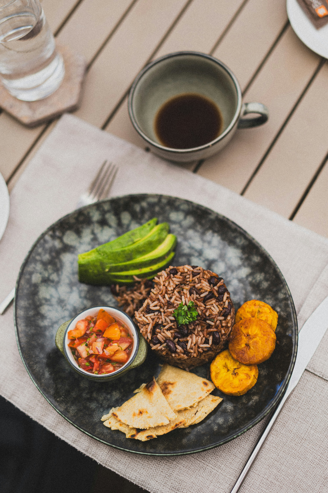

Inicio
Gallo pinto

Descripción:
Platillo tradicional costarricense preparado con arroz y frijoles mezclados y sazonados con especias y salsa tipo Lizano, acompañado frecuentemente de huevos, queso, natlila o plátano maduro. Es uno de los desayunos más representativos de Costa Rica.
Ingredientes:
- 1 taza de arroz cocido
- 1 taza de frijoles cocidos (negros o rojos)
- 2 cucharadas del caldo de los frijoles
- ¼ de cebolla picada
- ¼ de chlie dulce (pimiento) picado
- 1 cucharadita de aceite
- 1 cucharada de salsa Lizano
- Culantro fresco picado al gusto
- Sal al gusto
- Pimienta al gusto
Preparación:
- Calienta el aceite en una sartén a fuego medio.
- Agrega la cebolla y el chlie dulce y sofríe durante 2 o 3 minutos.
- Incorpora los frijoles junto con un poco de su caldo.
- Añade la salsa Lizano y mezcla bien.
- Agrega el arroz cocido y revuelve hasta integrar todos los ingredientes.
- Cocina durante 3 a 5 minutos, removiendo ocasionalmente.
- Agrega el culantro picado.
- Ajusta la sal y la pimienta al gusto.
- Cocina un minuto más y retira del fuego.
- Sirve caliente.
Tiempo de preparacion: 10-15 minutos.
Resultado: Un delicioso gallo pinto costarricense preparado con arroz, frijoles, vegetales frescos y salsa Lizano, lleno de sabor y tradición.